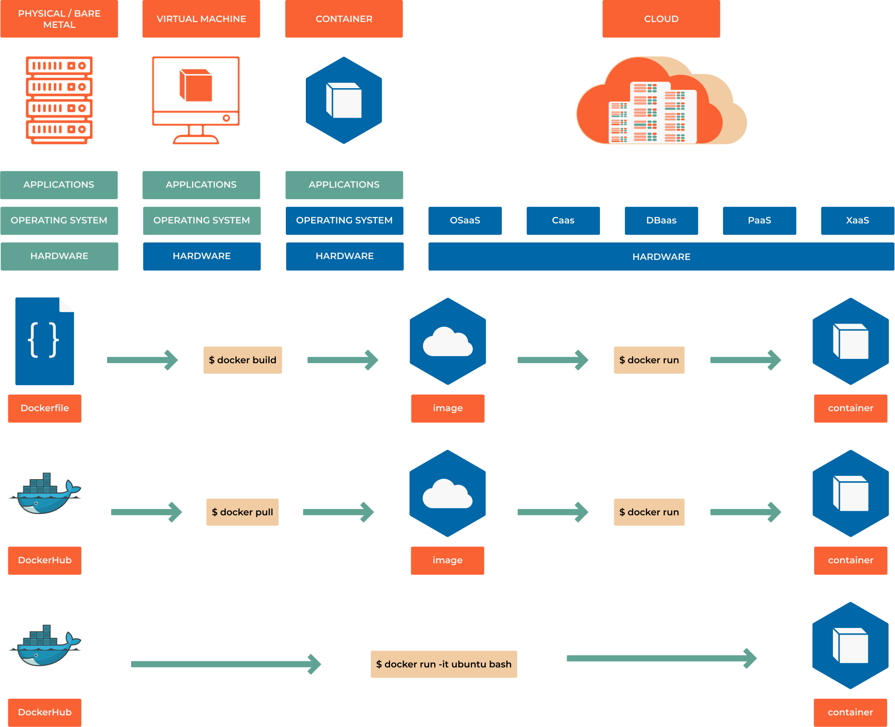

8.1 Getting Started
{kind=link}

From Zero to Container Hero
Before you can start building amazing containerized applications, you need the right tools installed. This section will get you up and running with container platforms on any operating system - and help you choose the best option for your use case.
Think of this as setting up your workshop before building something amazing. We’ll cover multiple platforms because different scenarios call for different tools.
Learning Objectives
By the end of this section, you will:
Install Docker or Podman on your preferred operating system
Understand the licensing implications of different container platforms
Configure your development environment for optimal container workflows
Verify your installation works correctly with a simple test
Choose the right container platform for your needs
Prerequisites: Administrative access to your computer, basic command-line knowledge
Choosing Your Platform
Docker vs Podman: The Decision Matrix
Criteria |
Docker |
Podman |
Recommendation |
|---|---|---|---|
Learning |
Excellent documentation |
Good documentation |
Docker for beginners |
Security |
Requires daemon (root) |
Rootless by default |
Podman for security-first |
Compatibility |
Industry standard |
Docker-compatible |
Docker for compatibility |
Enterprise Use |
License required >250 employees |
Always free |
Podman for enterprise |
Windows/Mac |
Docker Desktop available |
Limited support |
Docker for desktop dev |
Linux Production |
Good |
Excellent |
Podman for prod servers |
Quick Decision Guide:
Individual developers or small teams: Docker (simpler to start)
Large enterprises: Podman (licensing and security benefits)
Security-focused environments: Podman (rootless operation)
Windows/Mac development: Docker Desktop (better integration)
Linux production servers: Podman (lightweight, secure)
Docker Installation Guide
Windows Installation
Warning
Commercial License Notice: Docker Desktop requires a paid subscription for commercial use in organizations with >250 employees OR >$10M annual revenue. For enterprise use, consult your IT department or consider Podman.
Prerequisites for Windows:
Windows 10/11 Pro, Enterprise, or Education (64-bit)
WSL 2 or Hyper-V support
4GB system RAM
Step-by-step Installation:
Download Docker Desktop:
Visit https://www.docker.com/products/docker-desktop and download the installer
Choose your backend during installation:
WSL 2 (Recommended): Better performance, lower resource usage
Hyper-V: Traditional virtualization, requires Windows Pro/Enterprise
Install and restart:
# After installation, verify in PowerShell: docker --version docker run hello-world
Configure for development:
Enable WSL integration: Settings → Resources → WSL Integration
Adjust resource limits: Settings → Resources → Advanced
Configure file sharing: Settings → Resources → File Sharing
macOS Installation
Two Options Available:
Docker Desktop (Recommended for beginners):
# Download from docker.com or use Homebrew: brew install --cask docker # Start Docker Desktop from Applications # Verify installation: docker --version docker run hello-world
Command-line only (Advanced users):
# Using Homebrew: brew install docker brew install docker-compose # Note: Requires separate Docker Machine or remote Docker daemon
Linux Installation (Ubuntu/Debian Example)
Method 1: Official Docker Installation
# Remove old versions
sudo apt-get remove docker docker-engine docker.io containerd runc
# Update package index
sudo apt-get update
# Install prerequisites
sudo apt-get install \
ca-certificates \
curl \
gnupg \
lsb-release
# Add Docker's official GPG key
sudo mkdir -m 0755 -p /etc/apt/keyrings
curl -fsSL https://download.docker.com/linux/ubuntu/gpg | sudo gpg --dearmor -o /etc/apt/keyrings/docker.gpg
# Set up repository
echo \
"deb [arch=$(dpkg --print-architecture) signed-by=/etc/apt/keyrings/docker.gpg] https://download.docker.com/linux/ubuntu \
$(lsb_release -cs) stable" | sudo tee /etc/apt/sources.list.d/docker.list > /dev/null
# Install Docker Engine
sudo apt-get update
sudo apt-get install docker-ce docker-ce-cli containerd.io docker-buildx-plugin docker-compose-plugin
# Add your user to docker group (logout/login required)
sudo usermod -aG docker $USER
# Verify installation
docker run hello-world
Method 2: Convenience Script (Development Only)
# Quick installation for development environments
curl -fsSL https://get.docker.com -o get-docker.sh
sudo sh get-docker.sh
# Add user to docker group
sudo usermod -aG docker $USER
Podman Installation Guide
Why Choose Podman?
Daemon-less: No background service required
Rootless: Enhanced security by default
Drop-in replacement: Most Docker commands work identically
OCI compliant: Works with Kubernetes and other container orchestrators
Linux Installation
Ubuntu/Debian:
# Ubuntu 20.10 and newer
sudo apt-get update
sudo apt-get -y install podman
# For older Ubuntu versions:
echo "deb https://download.opensuse.org/repositories/devel:/kubic:/libcontainers:/stable/xUbuntu_$(lsb_release -rs)/ /" | sudo tee /etc/apt/sources.list.d/devel:kubic:libcontainers:stable.list
curl -L "https://download.opensuse.org/repositories/devel:/kubic:/libcontainers:/stable/xUbuntu_$(lsb_release -rs)/Release.key" | sudo apt-key add -
sudo apt-get update
sudo apt-get -y install podman
RHEL/CentOS/Fedora:
# Fedora
sudo dnf install podman
# RHEL 8/CentOS 8
sudo dnf install podman
# CentOS 7
sudo yum install podman
macOS Installation:
# Using Homebrew
brew install podman
# Initialize and start Podman machine
podman machine init
podman machine start
# Verify installation
podman run hello-world
Windows Installation:
Podman on Windows requires WSL 2:
# Install via Windows Package Manager
winget install RedHat.Podman
# Or download from GitHub releases
# https://github.com/containers/podman/releases
Post-Installation Setup
Verification Tests
Run these commands to verify your installation works correctly:
# Test 1: Version check
docker --version # or: podman --version
# Test 2: Hello World
docker run hello-world # or: podman run hello-world
# Test 3: Interactive container
docker run -it ubuntu:latest /bin/bash # or: podman run...
# Test 4: Resource check
docker system info # or: podman system info
Development Environment Optimization
Configure Resource Limits:
# For Docker Desktop - adjust in GUI settings
# Memory: 4GB minimum, 8GB recommended
# CPU: 2 cores minimum, 4 cores recommended
# Disk: 64GB minimum for serious development
Set Up Command Aliases:
# Add to ~/.bashrc or ~/.zshrc
alias d='docker'
alias dc='docker-compose'
alias dps='docker ps'
alias di='docker images'
# For Podman users who want Docker compatibility
alias docker='podman'
alias docker-compose='podman-compose'
Enable Completion:
# Docker completion (Bash)
curl -fLo ~/.docker-completion.bash \
https://raw.githubusercontent.com/docker/docker-ce/master/components/cli/contrib/completion/bash/docker
echo 'source ~/.docker-completion.bash' >> ~/.bashrc
# Podman completion
podman completion bash | sudo tee /etc/bash_completion.d/podman
Troubleshooting
Common Issues and Solutions:
Docker Desktop won’t start on Windows:
# Check WSL 2 status
wsl --list --verbose
# Update WSL 2 if needed
wsl --update
# Restart Docker Desktop service
net stop com.docker.service
net start com.docker.service
Permission denied errors on Linux:
# Add user to docker group
sudo usermod -aG docker $USER
# Logout and login again, or run:
newgrp docker
# Verify group membership
groups $USER
Podman rootless configuration:
# Set up user namespaces
echo "$USER:100000:65536" | sudo tee /etc/subuid
echo "$USER:100000:65536" | sudo tee /etc/subgid
# Restart user session
podman system migrate
Performance issues:
# Clean up unused resources
docker system prune -a # or: podman system prune -a
# Check resource usage
docker system df # or: podman system df
# Monitor running containers
docker stats # or: podman stats
Next Steps
Now that you have a container platform installed, you’re ready to:
Run your first container in the next section
Learn container basics with hands-on examples
Build your own container images using Dockerfiles
Orchestrate multi-container applications with Docker Compose
Tip
Pro Tip: Start with the platform you installed and don’t worry about trying both immediately. Docker and Podman commands are nearly identical, so skills transfer easily between them.